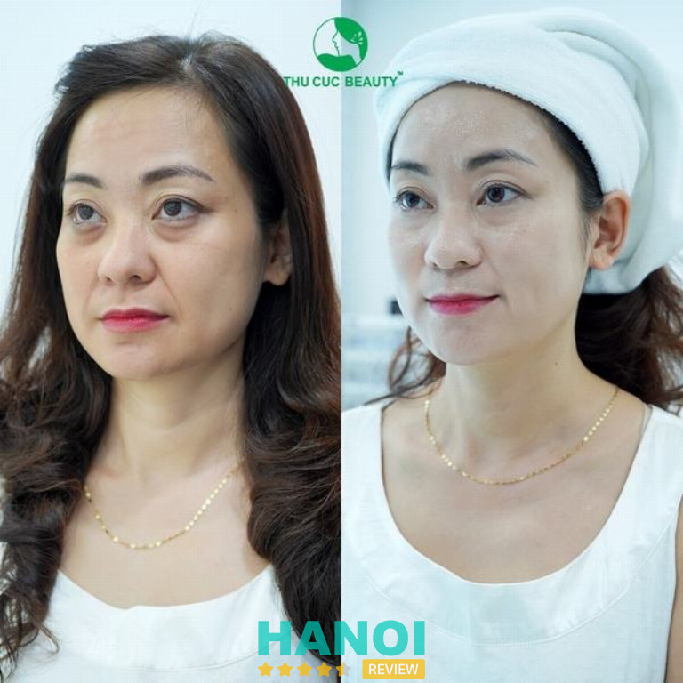
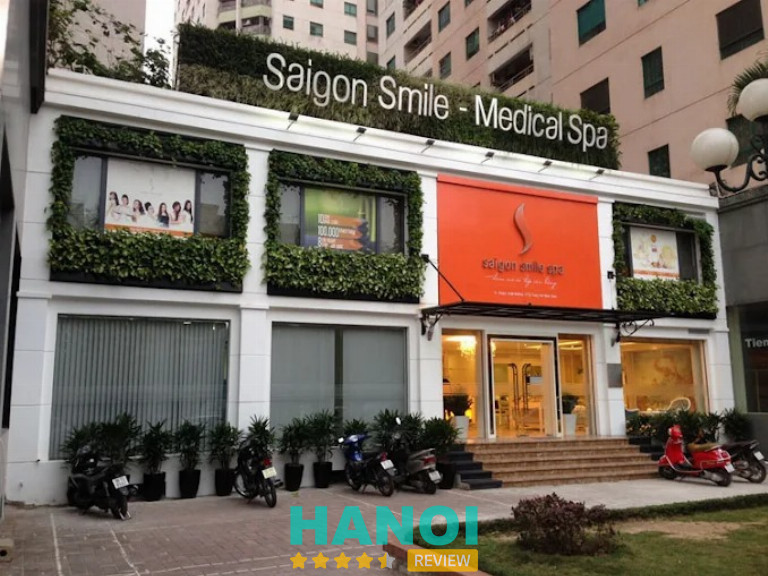

9 Địa chỉ cung cấp dịch vụ Hifu ở Hà Nội chất lượng, được tin tưởng nhất
Dịch vụ Hifu ở Hà Nội đang được đông đảo phái đẹp săn đón bởi khả năng nâng cơ, xóa nhăn và làm săn chắc da vượt trội mà không cần phẫu thuật. Công nghệ này sử dụng sóng siêu âm tập trung cường độ cao, tác động sâu vào các lớp hạ bì, kích thích sản sinh collagen và elastin. Để đạt được kết quả tối ưu và an toàn, việc lựa chọn địa chỉ thực hiện uy tín là vô cùng quan trọng. Trẻ hóa da bằng Hifu là giải pháp lý tưởng cho những ai muốn lấy lại vẻ ngoài tươi trẻ, rạng rỡ.
Top 9 Địa chỉ thực hiện dịch vụ Hifu tại Hà Nội giúp cải thiện da hiệu quả, an toàn
Công nghệ Hifu mang đến hiệu quả nâng cơ mặt, giảm nếp nhăn và cải thiện độ đàn hồi rõ rệt chỉ sau một lần thực hiện. Đây là phương pháp làm đẹp không xâm lấn, không cần nghỉ dưỡng, cực kỳ phù hợp với người bận rộn. Tham khảo ngay 5 địa chỉ cung cấp dịch vụ Hifu ở Hà Nội hàng đầu để trải nghiệm liệu trình an toàn và chuyên nghiệp.
Bệnh viện Da liễu Trung ương – P. Kim Liên
Dịch vụ Hifu nâng cơ, trẻ hóa làn da đang được triển khai tại Bệnh viện Da Liễu Trung Ương – đơn vị đầu ngành da liễu với bề dày hoạt động lâu năm và quy trình dịch vụ chuẩn y khoa. Danh tiếng vững vàng trong lĩnh vực điều trị – thẩm mỹ da tạo nên sự tin cậy lớn cho những ai quan tâm đến các giải pháp nâng cơ, trẻ hóa.
Bệnh viện có hệ thống máy móc hiện đại cùng đội ngũ chuyên môn sâu. Đây là nền tảng tạo lợi thế lớn cho bệnh viện khi cung cấp dịch vụ liên quan đến công nghệ thẩm mỹ công nghệ cao.
Dịch vụ Hifu tại đây sử dụng thiết bị đạt chuẩn quốc tế, hướng tới mục tiêu nâng cơ, cải thiện độ đàn hồi và làm săn chắc da. Quy trình được kiểm soát nghiêm ngặt, từng bước thực hiện theo phác đồ y khoa. Đội ngũ tiếp nhận – tư vấn – thực hiện gồm bác sĩ, kỹ thuật viên chuyên sâu về da liễu thẩm mỹ.
Chi phí dịch vụ được niêm yết rõ ràng theo từng vùng điều trị, phù hợp nhu cầu đa dạng của khách hàng tìm kiếm bệnh viện thực hiện dịch vụ hifu ở Hà Nội.
Một số ưu điểm nổi bật của dịch vụ HIFU:
- Thiết bị đạt chuẩn, được kiểm định định kỳ
- Liệu trình tùy theo tình trạng da từng người
- Quy trình khép kín theo tiêu chuẩn bệnh viện tuyến trung ương
- Được theo dõi và hướng dẫn chăm sóc sau thực hiện
Bệnh viện Da Liễu Trung Ương là lựa chọn phù hợp cho những ai muốn trải nghiệm công nghệ HIFU an toàn, được thực hiện trong môi trường y khoa đúng chuẩn. Mỗi dịch vụ đều được thực hiện theo quy trình thẩm định nghiêm ngặt, tạo nên sự yên tâm cho người tìm kiếm giải pháp nâng cơ và trẻ hóa da.
Dịch vụ Hifu tại đây được đánh giá cao nhờ thiết bị chất lượng, chuyên môn bác sĩ vững vàng và hiệu quả cải thiện rõ rệt sau liệu trình. Không gian thăm khám chuẩn bệnh viện lớn, cùng sự hỗ trợ tận tình trong suốt quá trình thực hiện, mang đến trải nghiệm đáng tin cậy cho khách hàng có nhu cầu chăm sóc da bằng công nghệ cao.
Thông tin liên hệ:
- Địa chỉ: Số 15A Phương Mai, P. Kim Liên, Hà Nội
- Điện thoại: 1900 6951
- Email: cskh.dalieutw@gmail.com
- Website: dalieu.vn
- Facebook: fb.com/benhviendalieutrunguong
Viện Thẩm Mỹ Xuân Hương – P. Hai Bà Trưng
Viện Thẩm Mỹ Xuân Hương triển khai dịch vụ Hifu ở Hà Nội với công nghệ New Doublo chuẩn Hàn Quốc, phù hợp nhu cầu nâng cơ và trẻ hóa da hiện đại. Đơn vị được biết đến nhờ thế mạnh về hệ thống thiết bị cao cấp, không gian chỉn chu và khả năng mang lại hiệu quả cải thiện da rõ rệt. Quy trình thực hiện được xây dựng kỹ lưỡng giúp khách hàng yên tâm khi trải nghiệm.
Dịch vụ Hifu New Doublo tại Viện Thẩm Mỹ Xuân Hương ứng dụng sóng siêu âm hội tụ để tác động sâu vào lớp mô đích, hỗ trợ nâng cơ, làm săn chắc da và tăng sinh collagen tự nhiên. Đội ngũ kỹ thuật viên được đào tạo bài bản, thao tác chuyên nghiệp và tuân thủ tiêu chuẩn an toàn trong từng bước.
Mức giá được công khai theo từng khu vực điều trị, tạo sự chủ động khi lựa chọn gói phù hợp. Thiết bị Doublo nâng cấp cho phép kiểm soát năng lượng ổn định, hỗ trợ hiệu quả duy trì dài lâu.
Một số điểm mạnh nổi bật:
- Công nghệ Hifu New Doublo đạt chuẩn Hàn Quốc
- Hỗ trợ nâng cơ, làm gọn đường nét gương mặt
- Tăng sinh collagen, cải thiện độ đàn hồi
- Thiết bị công nghệ cao, thao tác ổn định
- Mức giá rõ ràng từng vùng điều trị
- Không gian thẩm mỹ sang trọng
- Dịch vụ phù hợp nhiều nhu cầu cải thiện da
Viện Thẩm Mỹ Xuân Hương mang đến lựa chọn đáng tin cậy cho những ai tìm kiếm dịch vụ Hifu ở Hà Nội, nổi bật nhờ công nghệ New Doublo và quy trình thực hiện chỉn chu. Máy móc hiện đại kết hợp đội ngũ kỹ thuật viên tay nghề cao tạo nên hiệu quả nâng cơ và trẻ hóa da rõ rệt.
Trải nghiệm dịch vụ tại đây phù hợp những ai mong muốn cải thiện cấu trúc da bằng phương pháp an toàn, thời gian hồi phục nhẹ nhàng và hiệu quả duy trì ổn định. Muốn tìm một nơi ứng dụng Hifu theo tiêu chuẩn cao, Viện Thẩm Mỹ Xuân Hương là lựa chọn đáng để ưu tiên.
Thông tin liên hệ:
- Địa chỉ: 22 Triệu Việt Vương, P. Hai Bà Trưng, Hà Nội
- Điện thoại: 1800 6999
- Email: thammyxuanhuong@gmail.com
- Website: vienthammyxuanhuong.com.vn
- Facebook: fb.com/ThamMyXuanHuong
Thiên Hà Medical Beauty Center – Cầu Giấy
Thẩm mỹ viện Thiên Hà là một trong những cơ sở nổi bật chuyên cung cấp các giải pháp làm đẹp công nghệ cao tại Hà Nội. Với nhiều năm hoạt động, cơ sở này đã xây dựng được danh tiếng về chất lượng dịch vụ và hiệu quả thẩm mỹ mang lại cho khách hàng.
Thiên Hà tập trung vào các công nghệ tiên tiến, đặc biệt là các phương pháp trẻ hóa da không xâm lấn, giúp khách hàng cải thiện vẻ ngoài một cách an toàn và nhẹ nhàng. Đây là địa chỉ được nhiều người lựa chọn khi tìm kiếm thẩm mỹ viện thực hiện dịch vụ Hifu ở Hà Nội.
Thiên Hà triển khai dịch vụ trẻ hóa da Hifu với công nghệ hiện đại, có khả năng tác động sâu đến lớp SMAS, kích thích tăng sinh collagen mạnh mẽ, mang lại hiệu quả nâng cơ và xóa nhăn. Điểm mạnh của dịch vụ Hifu tại Thiên Hà là đội ngũ chuyên gia, kỹ thuật viên được đào tạo bài bản, thực hiện quy trình chuẩn hóa.
Dịch vụ Hifu tại Thiên Hà nổi bật với:
- Sử dụng công nghệ Hifu tiên tiến nhất.
- Quy trình thực hiện chuyên nghiệp, vô khuẩn.
- Cá nhân hóa liệu trình theo tình trạng da.
- Hỗ trợ tư vấn chi tiết trước và sau trị liệu.
- Mức giá dịch vụ công khai, minh bạch.
Lựa chọn Thiên Hà để trải nghiệm thẩm mỹ viện thực hiện dịch vụ Hifu ở Hà Nội là quyết định thông minh cho hành trình lấy lại nét thanh xuân. Trải nghiệm ngay dịch vụ chất lượng tại đây để thấy sự khác biệt.
Thông tin liên hệ:
- Địa chỉ: 176 Trần Duy Hưng, Cầu Giấy, Hà Nội
- Điện thoại: 0943 439 999
- Email: cskh@vienthammythienha.com
- Website: vienthammythienha.vn
- Facebook: fb.com/ThienHaMedicalBeautyCenter
Bệnh viện Da liễu Hà Nội – P. Văn Miếu Quốc Tử Giám
Bệnh viện Da liễu Hà Nội được biết đến như một cơ sở thực hiện dịch vụ Hifu ở Hà Nội ứng dụng công nghệ chuẩn y khoa, vận hành trong môi trường kiểm soát chất lượng nghiêm ngặt. Đội ngũ chuyên môn giàu thâm niêm, làm việc theo quy trình chuẩn mực, tạo nên sự an tâm cho khách hàng trong suốt quá trình trải nghiệm dịch vụ.
Công nghệ HIFU tại đây sử dụng hệ thống siêu âm hội tụ cường độ cao, hỗ trợ nâng cơ, cải thiện vùng da chảy xệ và tái tạo bề mặt da theo hướng an toàn. Trang thiết bị được đầu tư đồng bộ, giúp tối ưu hiệu quả khi tác động vào từng lớp cấu trúc da. Đội ngũ kỹ thuật viên được đào tạo bài bản, hiểu rõ đặc tính từng loại da để lựa chọn mức năng lượng phù hợp cho từng trường hợp.
Một số điểm nổi bật thường được khách hàng đánh giá tích cực:
- Quy trình tiếp nhận – phân tích da tỉ mỉ
- Hệ thống máy HIFU thế hệ mới
- Không gian khám và điều trị khép kín
- Chi phí được công khai rõ ràng
- Chăm sóc sau dịch vụ đầy đủ
Cơ sở này duy trì chất lượng theo hướng ổn định, tạo dựng sự tin tưởng cho những ai tìm kiếm giải pháp trẻ hóa da bằng công nghệ chuyên sâu. HIFU tại Bệnh viện Da liễu Hà Nội được xem như lựa chọn phù hợp cho người muốn cải thiện da mà không can thiệp ngoại khoa. Sự uy tín được xây dựng từ chất lượng dịch vụ, quy trình rõ ràng và môi trường điều trị an toàn.
Thông tin liên hệ:
- Địa chỉ: 79b Nguyễn Khuyến, P. Văn Miếu Quốc Tử Giám, Hà Nội
- Điện thoại: 0903 479 619
- Website: benhviendalieuhanoi.com
- Facebook: fb.com/benhviendalieuhanoi
Bệnh viện Thẩm Mỹ Thu Cúc – P. Cửa Nam
Thu Cúc Clinics thuộc nhóm thương hiệu thẩm mỹ quy mô lớn, hiện diện tại nhiều quận trung tâm Hà Nội, tạo điều kiện để khách hàng dễ dàng tiếp cận dịch vụ hifu tại Hà Nội với tiêu chuẩn chất lượng cao.
Thương hiệu phát triển lâu năm, sở hữu thế mạnh về công nghệ và định hướng nâng tầm trải nghiệm chăm sóc da. Dịch vụ hifu tại đây được vận hành theo quy trình khoa học, hỗ trợ nâng cơ – trẻ hóa da bằng năng lượng siêu âm hội tụ.

HIFU tại Thu Cúc Clinics nổi bật nhờ loạt công nghệ thế hệ mới, khả năng tác động sâu giúp cải thiện độ căng mịn rõ rệt. Đội ngũ chuyên viên có kỹ năng vững vàng, thao tác chính xác trên từng vùng da. Quy trình được xây dựng chi tiết, kết hợp phân tích da và lựa chọn mức năng lượng phù hợp từng người.
Giá dịch vụ hifu tại Hà Nội thuộc hệ thống Thu Cúc Clinics được niêm yết rõ ràng, nhiều lựa chọn dành cho từng nhu cầu trẻ hóa.
Một số ưu điểm đáng chú ý:
- Công nghệ hifu cập nhật liên tục
- Chuyên viên thành thạo kỹ thuật nâng cơ
- Không gian rộng rãi, tạo cảm giác dễ chịu
- Mức giá đa dạng theo từng gói
Thu Cúc Clinics mang đến trải nghiệm dịch vụ hifu tại Hà Nội dựa trên nền tảng công nghệ hiện đại, quy trình chỉn chu và hướng tiếp cận chuyên nghiệp. Thương hiệu này đã xuất hiện hơn 24 năm trong lĩnh vực thẩm mỹ, thu hút lượng lớn khách hàng đến trải nghiệm các giải pháp nâng cơ – trẻ hóa, trong đó HIFU luôn là lựa chọn nổi bật cho nhu cầu cải thiện da không xâm lấn.
Thông tin liên hệ:
- Địa chỉ: 1B Yết Kiêu, P. Cửa Nam, Hà Nội
- Điện thoại: 1900 1920
- Email: contact@thucucclinics.vn
- Website: thucucclinics.com
- Facebook: fb.com/thammythucuc.com.vn
Bệnh viện Thẩm Mỹ Hồng Ngọc – Ba Đình
Bệnh viện Đa khoa Hồng Ngọc là một trong những đơn vị y tế ngoài công lập có tiếng tại Hà Nội, không chỉ mạnh về khám chữa bệnh mà còn phát triển mảng thẩm mỹ công nghệ cao. Với hệ thống cơ sở khang trang, đội ngũ bác sĩ giàu kinh nghiệm và trang thiết bị đạt chuẩn, nơi đây mang đến nhiều lựa chọn làm đẹp an toàn, trong đó có dịch vụ HIFU – giải pháp nâng cơ, trẻ hóa da hiện đại được nhiều khách hàng quan tâm.
Về dịch vụ HIFU tại Hồng Ngọc, công nghệ sử dụng sóng siêu âm hội tụ cường độ cao tác động sâu đến lớp mô dưới da, kích thích tái tạo collagen và elastin. Nhờ đó, làn da trở nên săn chắc hơn, giảm nếp nhăn, cải thiện chảy xệ và hỗ trợ thon gọn nọng cằm mà không cần phẫu thuật hay nghỉ dưỡng. Trải nghiệm HIFU thường mang lại kết quả đáng kể chỉ sau một liệu trình và có thể duy trì lâu dài tùy vào cơ địa từng người.
Một số điểm nổi bật của HIFU tại đây:
- Không can thiệp dao kéo, hạn chế tối đa xâm lấn.
- Thích hợp cho những ai bắt đầu xuất hiện dấu hiệu lão hóa da.
- Thời gian thực hiện nhanh gọn, sinh hoạt bình thường ngay sau khi làm.
- Ít đau, ít sưng và hiếm gặp tác dụng phụ.
Dịch vụ phù hợp với người muốn cải thiện vùng da chảy xệ, nâng đường nét mặt hoặc giảm nọng. Tuy nhiên, mức giá và các gói ưu đãi có thể thay đổi theo từng thời điểm cũng như tình trạng da, vì vậy bạn nên liên hệ trực tiếp bệnh viện hoặc theo dõi website chính thức để cập nhật thông tin chuẩn xác nhất, tránh sai lệch.
Bệnh viện Đa khoa Hồng Ngọc tiếp tục được khách hàng lựa chọn nhờ thế mạnh về chuyên môn, không gian đạt chuẩn và công nghệ thẩm mỹ an toàn. Đây là lựa chọn đáng cân nhắc nếu bạn muốn trải nghiệm HIFU tại Hà Nội.
Thông tin liên hệ:
- Địa chỉ: 55 Yên Ninh, Trúc Bạch, Ba Đình, Hà Nội
- Điện thoại: 024 3927 5568
- Email: info@hongngochospital.vn
- Website: thammyhongngoc.com
- Facebook: fb.com/thammyvienhongngoc
Saigon Smile Medical – Cầu Giấy
Saigon Smile Spa nổi bật với hệ thống dịch vụ chăm sóc da công nghệ cao, phát triển lâu năm trong ngành làm đẹp và được biết đến rộng rãi nhờ đội ngũ chuyên môn giàu thực hành, quy trình hiện đại cùng trang thiết bị đạt chuẩn.
Trung tâm thẩm mỹ này chú trọng áp dụng công nghệ HIFU trong liệu trình nâng cơ – trẻ hóa da, mang đến trải nghiệm an toàn và hiệu quả cho người tìm kiếm giải pháp cải thiện đường nét gương mặt.

Công nghệ HIFU tại Saigon Smile Spa hoạt động dựa trên sóng siêu âm hội tụ cường độ cao, tác động đến lớp cơ nông SMAS giúp cải thiện độ săn chắc, tăng đàn hồi và làm gọn đường viền hàm. Quy trình chăm sóc được thực hiện bởi đội ngũ kỹ thuật viên được đào tạo bài bản, sử dụng máy móc đời mới và vật tư thẩm mỹ đạt chuẩn chất lượng. Chi phí hợp lý theo từng vùng điều trị, phù hợp với nhiều nhu cầu làm đẹp khác nhau.
Dưới đây là một số ưu điểm nổi bật:
- Sóng siêu âm hội tụ giúp nâng cơ và trẻ hóa tự nhiên
- Làm mờ nếp nhăn, tăng đàn hồi cho da
- Thời gian thực hiện nhanh, không cần nghỉ dưỡng
- Tác động vào lớp cơ SMAS, gia tăng hiệu quả rõ rệt
Dịch vụ HIFU của Saigon Smile Spa mang lại lựa chọn đáng tin cậy cho ai đang tìm giải pháp nâng cơ – trẻ hóa bằng công nghệ cao. Quy trình bài bản, thiết bị hiện đại cùng chất lượng dịch vụ ổn định luôn tạo cảm giác yên tâm cho người trải nghiệm.
Thông tin liên hệ:
- Địa chỉ: 17T9, Nguyễn Thị Thập, Cầu Giấy, Hà Nội
- Điện thoại: 024 6278 2782
- Email: 17t9trunghoa@saigonsmile.com.vn
- Website: saigonsmile.com.vn
- Facebook: fb.com/Saigonsmilemedical
Phòng khám Da liễu Hồng Đức – Nam Từ Liêm
Phòng khám Da liễu Hồng Đức hiện đang được nhiều người quan tâm khi tìm hiểu về dịch vụ HIFU ở Hà Nội, đặc biệt nhờ định hướng rõ ràng về chất lượng và hệ thống dịch vụ chuyên sâu. Cơ sở này phát triển theo mô hình thẩm mỹ da liễu an toàn, nổi bật với đội ngũ bác sĩ chuyên môn cao, cơ sở vật chất hiện đại và quy trình chăm sóc khách hàng kỹ lưỡng. Sự đầu tư bài bản về máy móc công nghệ cao tạo nền tảng cho những liệu trình trẻ hóa ổn định và hiệu quả.
Tại đây, dịch vụ HIFU Ultraformer được triển khai theo quy chuẩn chuyên sâu, phù hợp với nhu cầu nâng cơ, làm gọn đường nét, cải thiện độ đàn hồi và hỗ trợ trẻ hóa toàn diện. Công nghệ HIFU hội tụ năng lượng siêu âm cường độ cao giúp tác động sâu, hỗ trợ kích thích collagen và mang lại hiệu quả rõ rệt sau liệu trình.
Giá dịch vụ được xây dựng hợp lý theo từng vùng điều trị, tạo điều kiện để nhiều người dễ dàng tiếp cận. Đội ngũ trực tiếp thực hiện đều có chuyên môn vững và thao tác chuẩn xác, giúp tối ưu cảm giác dễ chịu trong suốt liệu trình.
Một số điểm đáng chú ý:
- Công nghệ Ultraformer hiện đại
- Quy trình chuẩn y khoa
- Không cần nghỉ dưỡng
- Hiệu quả cải thiện rõ ràng
- Thời gian thực hiện nhanh
Phòng khám Da liễu Hồng Đức giữ vững vị thế uy tín trong lĩnh vực trẻ hóa da, là điểm đến phù hợp cho những ai đang tìm nơi đáng tin cậy để trải nghiệm dịch vụ HIFU ở Hà Nội, mang lại cảm giác an tâm và hài lòng trong suốt quá trình trải nghiệm.
Thông tin liên hệ:
- Địa chỉ: Số 58 Nguyễn Hoàng, Mỹ Đình 2, Nam Từ Liêm, Hà Nội
- Điện thoại: 024 36681 3636
- Email: dalieuhongduc@gmail.com
- Website: dalieuhongduc.com
- Facebook: fb.com/dalieuhongduc
Phòng khám Da liễu S Beauty – Cầu Giấy
Thẩm Mỹ Viện Thẩm Mỹ S đã kiến tạo nên thương hiệu uy tín trong lĩnh vực chăm sóc sắc đẹp và trẻ hóa da. Với bề dày hoạt động cùng sự đầu tư chuyên nghiệp, Thẩm Mỹ S trở thành địa chỉ được nhiều khách hàng tin tưởng tại thủ đô.
Thế mạnh nổi trội của cơ sở là các giải pháp làm đẹp không xâm lấn, đặc biệt là dịch vụ hifu ở Hà Nội, mang lại hiệu quả rõ rệt mà không cần nghỉ dưỡng.
Dịch vụ nâng cơ Hifu tại Thẩm Mỹ S ứng dụng công nghệ sóng siêu âm hội tụ cường độ cao, tác động sâu vào các lớp cấu trúc da. Quy trình thực hiện bởi đội ngũ kỹ thuật viên tay nghề cao, được đào tạo bài bản, chuẩn hóa theo tiêu chuẩn quốc tế.
Sản phẩm và thiết bị sử dụng đều là hàng chính hãng, có nguồn gốc rõ ràng, đã qua kiểm định chất lượng nghiêm ngặt. Khách hàng sẽ trải nghiệm dịch vụ với mức giá minh bạch, tương xứng với chất lượng và kết quả nhận được.
Khi trải nghiệm liệu trình Hifu tại Thẩm Mỹ S, quý khách nhận được:
- Thiết bị Hifu tiên tiến, được FDA (Cục quản lý Thực phẩm và Dược phẩm Hoa Kỳ) chứng nhận.
- Phác đồ điều trị được cá nhân hóa, thiết kế phù hợp với tình trạng da cụ thể của từng khách hàng.
- Không gian làm đẹp sang trọng, riêng tư, mang lại cảm giác thư thái tuyệt đối.
- Kết quả da căng mướt, giảm thiểu nếp nhăn, đường nét khuôn mặt thon gọn hơn.
Viện thẩm mỹ này luôn giữ vững chất lượng dịch vụ, mang đến vẻ đẹp tự nhiên và bền vững cho mọi khách hàng. Lựa chọn Thẩm Mỹ S là lựa chọn sự an tâm và hiệu quả lâu dài cho hành trình trẻ hóa làn da. Để nhận tư vấn chi tiết về dịch vụ hifu ở Hà Nội và đặt lịch hẹn, vui lòng liên hệ.
Thông tin liên hệ:
- Địa chỉ: Số 81 Trung Kính, Trung Hòa, Cầu Giấy, Hà Nội
- Điện thoại: 0988 540 002
- Website: thammysbeauty.vn
- Facebook: fb.com/phongkhamsbeautyhn
Tiêu chí chọn lựa dịch vụ Hifu ở Hà Nội uy tín, đáng tin cậy
Khi quyết định làm đẹp bằng Hifu, điều quan trọng là phải tìm được một cơ sở chất lượng để đảm bảo an toàn và hiệu quả thẩm mỹ như mong muốn. Việc kiểm tra và đánh giá kỹ lưỡng các yếu tố sẽ giúp bạn tự tin hơn với sự lựa chọn dịch vụ Hifu ở Hà Nội của mình.
- Công nghệ áp dụng: Ưu tiên những địa điểm sử dụng máy Hifu đời mới, cho khả năng tác động sâu, ổn định và hỗ trợ cải thiện độ đàn hồi da một cách rõ rệt.
- Trình độ chuyên viên: Chọn cơ sở sở hữu đội ngũ có chứng chỉ thực hành Hifu, hiểu cấu trúc da mặt và biết điều chỉnh mức năng lượng phù hợp từng khu vực.
- Quy trình thăm khám: Nên tìm nơi có bước kiểm tra da cụ thể, đưa ra phác đồ phù hợp để hạn chế rủi ro và giúp tối ưu độ săn chắc sau thực hiện.
- Chất lượng sản phẩm hỗ trợ: Ưu tiên các trung tâm dùng gel dẫn và tinh chất đạt chuẩn, giúp quá trình truyền năng lượng ổn định và tăng độ an toàn cho làn da.
- Mức giá minh bạch: Một địa điểm uy tín luôn niêm yết giá rõ ràng từng vùng điều trị, tạo sự yên tâm khi cân nhắc chi phí và so sánh dịch vụ.
- Phản hồi khách hàng: Xem xét đánh giá thực tế từ khách đã trải nghiệm, chú ý yếu tố thái độ phục vụ, hiệu quả nâng cơ và cảm giác sau liệu trình.
- Không gian và trang thiết bị: Cơ sở sạch sẽ, máy móc hiện đại và khu điều trị riêng tư giúp khách hàng cảm nhận sự thoải mái trong suốt quá trình trải nghiệm.
Việc tìm hiểu dịch vụ Hifu ở Hà Nội giúp người quan tâm nắm rõ những yếu tố quan trọng khi lựa chọn nơi nâng cơ trẻ hóa da. Công nghệ phù hợp, chuyên viên giàu kinh nghiệm và quy trình minh bạch chính là nền tảng tạo nên hiệu quả rõ rệt cho từng khu vực điều trị. Khi ưu tiên các địa điểm uy tín, làn da sẽ được chăm sóc đúng cách và duy trì săn chắc lâu dài, rất đáng để trải nghiệm.
Có thể bạn quan tâm
- 10 Bác sĩ phẫu thuật thẩm mỹ tại Hà Nội giỏi, mát tay nhất
- 10 Thẩm mỹ viện căng chỉ trẻ hóa da mặt tại Hà Nội đẹp, uy tín
- 10 Spa trị mụn tại Hà Nội dịch vụ tốt, nhiều người tin chọn
- 5 Địa chỉ thẩm mỹ làm đẹp vùng kín ở Hà Nội uy tín nhất
DOANH NGHIỆP: Đăng tải thông tin MIỄN PHÍ.
Tin đọc nhiều


10 Thẩm mỹ viện ở Hai Bà Trưng uy tín, chất lượng dịch vụ cao
Nếu bạn đang tìm kiếm thẩm mỹ viện ở Hai Bà Trưng đáng tin cậy, việc chọn đúng địa chỉ mang lại hiệu quả làm...

10 bác sĩ nâng ngực giỏi ở Hà Nội được nhiều người tin tưởng lựa...
Lựa chọn bác sĩ thực hiện nâng ngực là quyết định có ảnh hưởng trực tiếp đến kết quả thẩm mỹ và sức khỏe lâu...

5 Thẩm mỹ viện tại quận Ba Đình dịch vụ chất lượng, giá tốt
Trong khu vực Hà Nội, các thẩm mỹ viện tại quận Ba Đình đang mọc lên ngày càng nhiều. Có không ít thương hiệu quảng...

5 Bác sĩ cắt mí mắt tại Hà Nội chuyên môn cao, đảm bảo uy...
Nếu chọn được bác sĩ cắt mí mắt tại Hà Nội có kiến thức và tay nghề chuyên môn cao, làm việc trách nhiệm, tận...

Trở thành người đầu tiên bình luận cho bài viết này!